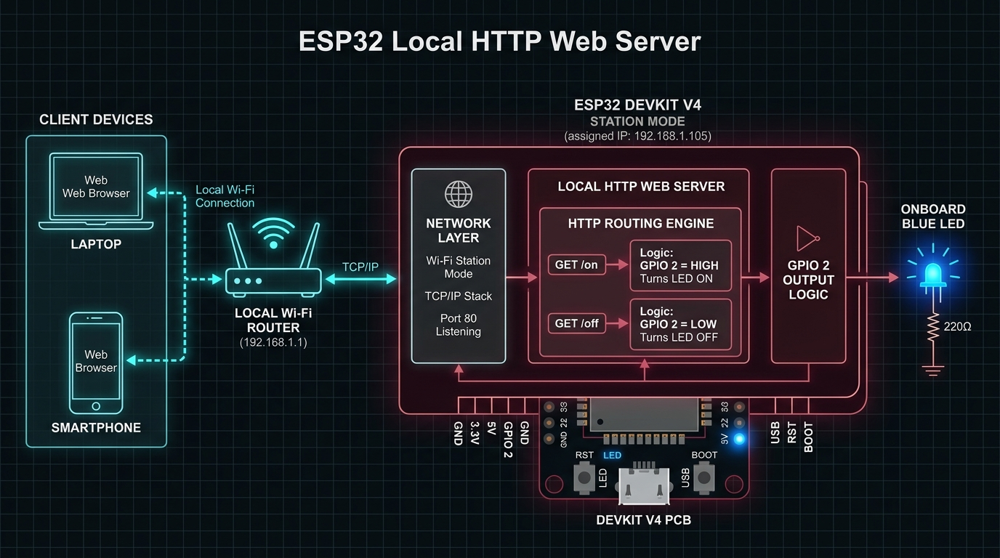

Task 01: HTTP LED Control
The foundation of networked embedded control: deploying a lightweight HTTP web server directly on an ESP32 microcontroller in Station Mode. Mapping browser GET requests over a local Wi-Fi subnet directly into physical GPIO 2 state transitions to drive the onboard LED without external cloud dependencies.
1. Overview
The purpose of this first task was to understand the most fundamental form of network-based hardware control: making a microcontroller respond directly to commands dispatched from a web browser.
An ESP32 DevKit V4 (ESP32 Dev Module) was configured to operate simultaneously as both the embedded hardware controller and a lightweight HTTP web server. Operating in Station (STA) mode, the ESP32 joins the local 2.4 GHz Wi-Fi network, receives an assigned local IP address from the router via DHCP, and starts an HTTP server listening on standard port 80.
Once the server is running, any browser on a device connected to that same local Wi-Fi network can navigate to the ESP32's IP address. The ESP32 serves a compact HTML control page with two interactive controls:
- ON — sets GPIO 2 HIGH, turning the onboard LED ON
- OFF — sets GPIO 2 LOW, turning the onboard LED OFF

There is no cloud platform, database, external server, or IoT dashboard involved in this task. The complete communication pipeline is:
This established a crucial foundational baseline for the IoT portfolio. Before introducing cloud brokers, publish-subscribe messaging, external sensors, or transistor stages, I first needed to master how a network request directly triggers a physical action on embedded silicon.
2. What I Was Trying to Build
The engineering objective was not merely to blink an LED. The real goal was to engineer and verify the complete closed path between a software user command and a physical electrical output without external dependencies:
- User clicks "ON" button on client browser.
- Browser issues
GET /onrequest across local Wi-Fi. - ESP32 Web Server matches route to
handleOn(). - Firmware executes
digitalWrite(GPIO 2, HIGH). - Onboard blue LED illuminates immediately.
- ESP32 returns HTTP 200 OK + updated HTML ("LED is ON").
- User clicks "OFF" button on client browser.
- Browser issues
GET /offrequest across local Wi-Fi. - ESP32 Web Server matches route to
handleOff(). - Firmware executes
digitalWrite(GPIO 2, LOW). - Onboard blue LED extinguishes immediately.
- ESP32 returns HTTP 200 OK + updated HTML ("LED is OFF").
This represents the core principle behind networked embedded systems: an application-layer network message is translated into a physical hardware action.
3. Learning Objectives
- Configure an ESP32 as a Wi-Fi station/client (STA mode).
- Connect the ESP32 to an existing 2.4 GHz Wi-Fi network.
- Obtain and identify the ESP32's local IP address via DHCP.
- Run an HTTP server directly on a resource-constrained microcontroller.
- Understand the fundamental HTTP request-response architecture.
- Create clean URL routes (
/,/on,/off). - Map incoming browser HTTP requests to C++ callback functions.
- Control GPIO output states directly from HTTP route handlers.
- Generate and serve dynamic HTML directly from microcontroller flash memory.
- Track and display real-time hardware state on a web interface.
- Debug network connectivity and routing using the Serial Monitor.
- Understand the architectural limitations of local, synchronous HTTP control.
- Recognize why MQTT is required as the next step for scalable IoT messaging.
4. System Architecture
The overall physical and logical architecture links the client browser to the microcontroller over the local wireless network:
digitalWrite(2, HIGH) → Blue LED turns ON → Returns updated HTML page.digitalWrite(2, LOW) → Blue LED turns OFF → Returns updated HTML page.5. Components & Hardware
6. Hardware Configuration
A deliberate choice was made to require zero external components for this initial task. No breadboard, external resistors, transistors, or jumper wires were introduced.
Relying strictly on the development board's factory onboard LED on GPIO 2 isolated the network, routing, and HTTP server firmware from potential wiring errors or breadboard connection faults, guaranteeing a clean testing baseline.
7. Software Stack
- Arduino IDE: Development environment used to author firmware, compile binary sketches, flash the ESP32 over serial, and observe runtime diagnostics.
WiFi.h: Native ESP32 networking library managing Wi-Fi radio initialization, station authentication, connection monitoring, and IP discovery. Key calls:WiFi.begin(ssid, password)andWiFi.localIP().WebServer.h: Core HTTP server library for the ESP32. Listens for incoming TCP connections on port 80 viaWebServer server(80), parses HTTP request headers, routes URLs to C++ callbacks, and streams HTML payloads.
8. How the ESP32 Connects to Wi-Fi
In setup(), the microcontroller initiates the 802.11 b/g/n association handshake:
WiFi.begin(ssid, password);
Serial.print("Connecting");
while (WiFi.status() != WL_CONNECTED) {
delay(500);
Serial.print(".");
}
Serial.println();
Serial.print("IP address: ");
Serial.println(WiFi.localIP());
The ESP32 blocks execution until WiFi.status() returns WL_CONNECTED. The Wi-Fi access point assigns an IPv4 address, which is printed to the Serial Monitor (e.g. 192.168.1.12). Because DHCP addresses are dynamic, reading this address over serial is essential for locating the web server on the local network.
9. How the HTTP Server Works
The HTTP server lifecycle comprises three distinct phases:
- Instantiation:
WebServer server(80);initializes the server object bound to port 80, the default port for unencrypted HTTP traffic. - Startup: In
setup(), after Wi-Fi association is confirmed,server.begin();opens a listening TCP socket on port 80. - Event Loop Polling: In
loop(),server.handleClient();continuously checks the socket buffer for incoming client connections, parses the requested HTTP method and URI, and invokes the matching route handler.
10. HTTP Client-Server Model
The project implements a classic local-area client-server relationship:
The ESP32 is not hosting a public website on the internet; it is acting as a self-contained web server reachable strictly from within the local LAN.
11. URL Routing
URL routing establishes a deterministic map between browser URIs and embedded C++ functions:
| Route | C++ Function | Hardware Action | HTTP Response |
|---|---|---|---|
/ |
handleRoot() |
None (reads current GPIO state) | 200 OK + Control Page HTML |
/on |
handleOn() |
digitalWrite(2, HIGH) → LED ON |
200 OK + Updated HTML ("LED is ON") |
/off |
handleOff() |
digitalWrite(2, LOW) → LED OFF |
200 OK + Updated HTML ("LED is OFF") |
server.on("/", handleRoot);
server.on("/on", handleOn);
server.on("/off", handleOff);This highlights the core concept: the URL route itself acts as an execution command API.
12. GPIO Control
GPIO (General Purpose Input/Output) pins interface microcontroller logic with external electrical circuits. In this task, GPIO 2 is configured as a push-pull digital output:
pinMode(ledPin, OUTPUT);
digitalWrite(ledPin, LOW); // initial state: OFF
When the handler calls digitalWrite(ledPin, HIGH), the ESP32 sets the pin voltage to 3.3V, forward-biasing the onboard LED and illuminating it. Calling digitalWrite(ledPin, LOW) drops the pin to 0V (ground), turning the LED off.
13. Building the Web Page
The web interface is synthesized dynamically in RAM inside the buildPage() function:
String buildPage() {
String state = digitalRead(ledPin) ? "ON" : "OFF";
String page = "<!DOCTYPE html><html><head>";
page += "<meta name='viewport' content='width=device-width, initial-scale=1'>";
page += "<title>ESP32 LED Control</title></head>";
page += "<body style='text-align:center;font-family:sans-serif'>";
page += "<h1>ESP32 LED Control</h1>";
page += "<p>LED is " + state + "</p>";
page += "<p><a href='/on'><button>ON</button></a> ";
page += "<a href='/off'><button>OFF</button></a></p>";
page += "</body></html>";
return page;
}
The code reads the physical pin state using digitalRead(ledPin) to dynamically populate the <p>LED is ON/OFF</p> label before returning the markup. The buttons are standard HTML anchor tags linking to /on and /off.
14. Complete Request Flow
The detailed sequence from user interaction to visual hardware state update:
/on or /off) across the local Wi-Fi router to TCP port 80.server.handleClient() parses URI headers and dispatches to handleOn() or handleOff().digitalWrite(ledPin, HIGH/LOW), immediately changing the physical state of the blue LED on GPIO 2.buildPage() reads pin state via digitalRead(), composes new HTML string, and streams HTTP 200 OK back to the browser.15. What Happens When ON Is Clicked?
- Request: The browser navigates to
http://ESP32_IP/on, sending an HTTP GET request to port 80. - Matching:
server.handleClient()compares the request URI against registered routes and identifies/on. - Execution: The registered callback
handleOn()executes. - Hardware Actuation:
digitalWrite(ledPin, HIGH)raises GPIO 2 to 3.3V. - Output: The onboard blue LED illuminates immediately.
- Payload Generation:
buildPage()reads the HIGH state and generates an HTML page indicatingLED is ON. - Response:
server.send(200, "text/html", buildPage())returns the payload to the browser.
16. What Happens When OFF Is Clicked?
- Request: The browser navigates to
http://ESP32_IP/off. - Matching: The server matches the URI to the
/offroute. - Execution: The callback
handleOff()executes. - Hardware Actuation:
digitalWrite(ledPin, LOW)drops GPIO 2 to 0V. - Output: The onboard LED turns off.
- Payload Generation:
buildPage()reads the LOW state and formats the HTML withLED is OFF. - Response: The browser renders the updated response page with the LED turned off.
17. Implementation Process
- Arduino IDE Setup: Installed the ESP32 board package via Board Manager, selected ESP32 Dev Module, and selected the active COM port.
- Hardware Connection: Connected the ESP32 DevKit V4 to the PC using a verified data-capable micro-USB cable.
- Wi-Fi Configuration: Entered the local Wi-Fi SSID and password into the sketch configuration.
- GPIO Setup: Configured GPIO 2 as digital output using
pinMode(ledPin, OUTPUT). - Server Instantiation: Instantiated
WebServer server(80). - Route Registration: Bound URL routes
/,/on, and/offto their handler functions. - Firmware Compilation & Flashing: Compiled and uploaded the sketch to the ESP32.
- Serial Monitoring: Opened the Serial Monitor at 115200 baud to monitor the Wi-Fi connection handshake.
- IP Discovery: Recorded the assigned local IP address (e.g.
192.168.1.12). - Browser Verification: Opened a web browser on the same Wi-Fi network and entered
http://192.168.1.12/. - Functional Testing: Tested clicking the ON and OFF buttons repeatedly.
- Validation: Verified that the physical onboard LED switched state and the page reflected the correct status after each click.
Demonstration Media
Photographic verification of the ESP32 hardware bench setup and serial IP output:


18. Testing & Verification
A structured test procedure was executed to validate each layer of the system:
19. Why HTTP?
HTTP was selected as the first communication protocol because of its simplicity and universality:
- Universal Browser Native: Every desktop, tablet, and smartphone includes a native web browser capable of making HTTP requests without requiring custom companion apps.
- Intuitive Semantics: URL paths provide a clean, human-readable command interface (e.g.
/onand/off). - Clear Client-Server Decoupling: The request-response cycle makes debugging straightforward using standard developer tools and the Serial Monitor.
- Direct Educational Progression: Understanding how a network request is translated into a GPIO output establishes the necessary mental model before introducing publish-subscribe protocols.
20. Limitations of This Approach
While effective for local demonstration, this simple HTTP server architecture has critical limitations for practical IoT deployments:
- Local Network Dependency: The ESP32 is accessible only from devices on the same local Wi-Fi subnet; it cannot be controlled from outside the home without complex port-forwarding.
- Strict Request-Response Model: The browser must initiate every transaction. The ESP32 cannot proactively push state changes to the client without a new request.
- Full Page Reload Overhead: Each button click reloads the entire HTML page, creating unnecessary bandwidth and rendering overhead.
- Scalability Bottlenecks: Running an HTTP server on a microcontroller does not scale well to multiple simultaneous clients or battery-powered sensors.
21. HTTP vs MQTT
These architectural limitations motivate the transition to MQTT in Task 2:
| Attribute | Task 1 — HTTP | Task 2 — MQTT |
|---|---|---|
| Network Scope | Local Wi-Fi subnet only | Global Internet / Cloud |
| Architecture | Synchronous Request - Response | Asynchronous Publish - Subscribe |
| Topology | Browser directly contacts ESP32 | Central broker decouples clients |
| Command Addressing | URL endpoints (/on, /off) |
Feeds / Topics (feeds/bulb) |
| Microcontroller Role | Hosts web server on port 80 | Operates as lightweight client to broker |
| Payload Overhead | Full HTML document per command | Minimal binary packets (e.g. "ON" / "OFF") |
| Bi-Directionality | One-way client to server requests | Two-way synchronized telemetry & control |
22. Complete Firmware Code
#include <WiFi.h>
#include <WebServer.h>
const char* ssid = "YOUR_WIFI_NAME";
const char* password = "YOUR_WIFI_PASSWORD";
const int ledPin = 2; // inbuilt LED
WebServer server(80);
String buildPage() {
String state = digitalRead(ledPin) ? "ON" : "OFF";
String page = "<!DOCTYPE html><html><head>";
page += "<meta name='viewport' content='width=device-width, initial-scale=1'>";
page += "<title>ESP32 LED Control</title></head>";
page += "<body style='text-align:center;font-family:sans-serif'>";
page += "<h1>ESP32 LED Control</h1>";
page += "<p>LED is " + state + "</p>";
page += "<p><a href='/on'><button>ON</button></a> ";
page += "<a href='/off'><button>OFF</button></a></p>";
page += "</body></html>";
return page;
}
void handleRoot() { server.send(200, "text/html", buildPage()); }
void handleOn() {
digitalWrite(ledPin, HIGH);
server.send(200, "text/html", buildPage());
}
void handleOff() {
digitalWrite(ledPin, LOW);
server.send(200, "text/html", buildPage());
}
void setup() {
Serial.begin(115200);
pinMode(ledPin, OUTPUT);
digitalWrite(ledPin, LOW);
WiFi.begin(ssid, password);
Serial.print("Connecting");
while (WiFi.status() != WL_CONNECTED) {
delay(500);
Serial.print(".");
}
Serial.println();
Serial.print("IP address: ");
Serial.println(WiFi.localIP());
server.on("/", handleRoot);
server.on("/on", handleOn);
server.on("/off", handleOff);
server.begin();
}
void loop() {
server.handleClient();
}23. Code Breakdown
WiFi.h & WebServer.hWebServer server(80)buildPage()digitalRead(ledPin) and builds the responsive HTML page string.handleRoot()/.handleOn() & handleOff()digitalWrite() and responds with updated page markup.server.on()server.begin()server.handleClient()loop() to accept and process incoming HTTP client connections.24. Debugging & Troubleshooting
Serial.begin(115200) in firmware.http://ESP32_IP/on directly in the browser bar to bypass button HTML rendering and isolate server-side routing issues.25. Key Learnings
digitalWrite(), and tracking pin state with digitalRead().26. Final Result
The ESP32 successfully connected to the local Wi-Fi network and operated as a reliable HTTP web server. The project verified every stage of the embedded pipeline:
- Joined the local Wi-Fi network in Station mode and received a local DHCP IP address.
- Opened an HTTP socket on port 80 and listened for client requests.
- Served a dynamic HTML control interface directly from the ESP32.
- Processed
/onand/offroute requests reliably. - Converted network requests directly into physical GPIO 2 state changes.
- Toggled the physical onboard LED instantly upon browser clicks.
- Returned the updated hardware state to the browser without external dependencies.
27. Task 01 Takeaway
The primary outcome of Task 1 was not just lighting an LED; it was establishing and verifying the complete path from a network command to a physical hardware response:
This established the core architectural blueprint for all subsequent IoT engineering. However, because local HTTP requires clients to be on the same network and reload pages synchronously, a scalable system requires moving to a lightweight publish-subscribe cloud architecture.
28. Why Task 2 Is the Next Step
Task 1 demonstrated point-to-point local HTTP control. Task 2 builds directly upon this foundation by extending communication to the global internet using the MQTT protocol and the Adafruit IO cloud broker:
Task 2 solves the limitations of local HTTP by decoupling clients through a cloud broker, enabling remote internet control, transistor driver isolation for heavier loads, and bidirectional state synchronization through a physical push button.